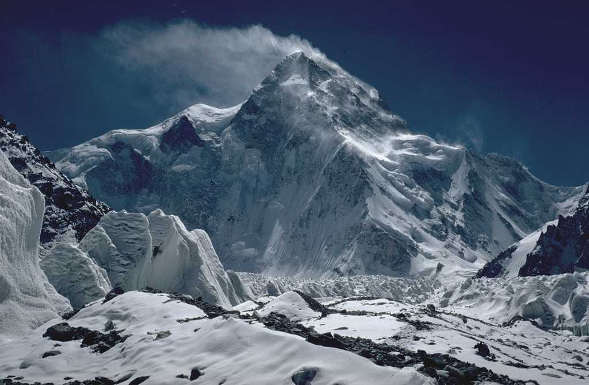

Maood ur Reman
K2

K2, at 8,611metres (28,251 ft)above sea level, is the second-highest mountain
on Earth, after Mount Everest at 8,849 metres (29,032 ft).[3] It lies in the Karakoram k2 visit range,
partially in the Gilgit-Baltistan region of Pakistan-administered Kashmir and partially in the
China-administered Trans-Karakoram Tract in the Taxkorgan
Tajik Autonomous County of Xinjiang
burjkhalifa
The Burj Khalifa (known as the Burj Dubai prior to its
inauguration in 2010) is a skyscraper in Dubai,visit burjkhalifa
United Arab Emirates. It is the world's tallest building. With a total height
of 829.8 m (2,722 ft, or just over half a mile)
and a roof height (excluding antenna, but including a
242.6 m spire[2]) of 828 m (2,717 ft), the Burj Khalifa
has been the tallest structure
and building in the world since its topping out in 2009,
supplanting Taipei 101, the previous holder of that status